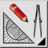
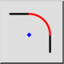

Dit is een automatische vertaling.
Werkbalk / icoon:


Menu: Modificeren > Afronden
Sneltoets: R, N
Commando's: round | rn
Beschrijving:
Ronden van de hoek van een contour. Optioneel kunnen de randprofielen van de hoek automatisch worden bijgesneden om aan de nieuwe vorm te voldoen.
Procedure: